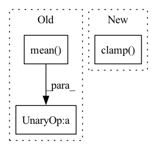

Pattern ID :35435

Before Change
).mean()
elif "expert_policy" in batch["observations"]:
expert_policies = batch["observations"]["expert_policy"]
total_loss = (
-(actor_critic_output.distributions.log_probs_tensor * expert_policies)
.sum(-1)
.mean()
)
else:
raise NotImplementedError(
"Imitation loss requires either `expert_action` or `expert_policy`"
" sensor to be active."
After Change
total_loss = -(
expert_actions_masks
* actor_critic_output.distributions.log_probs(expert_actions)
).sum() / torch.clamp(expert_successes, min=1)
elif "expert_policy" in batch["observations"]:
raise NotImplementedError()
// expert_policies = batch["observations"]["expert_policy"]
// total_loss = (
In pattern: SUPERPATTERN
Frequency: 3
Non-data size: 3
Instances
Fragment ID: 100635126
Project Name: allenai/allenact
Commit Name: 8835da631f1f04ccfe36eb535eed90ab8b88526a
Time: 2020-01-17
Author: lucaw@allenai.org
File Name: onpolicy_sync/losses/imitation.py
M Class Name: Imitation
N Class Name: Imitation
M Method Name: loss(3)
N Method Name: loss(3)
M Parent Class: AbstractActorCriticLoss
N Parent Class: AbstractActorCriticLoss
M File Name: onpolicy_sync/losses/imitation.py
N File Name: onpolicy_sync/losses/imitation.py
M Start Line: 19
M End Line: 29
N Start Line: 19
N End Line: 41
'>
Before Change
if discrete:
vals = torch.stack([q(s_rep) for q in agent.critics], dim=0).min(0).values
entropy_bonus = log_alpha.exp() * a_dist.entropy()
actor_loss = -((a_dist.probs * vals).sum(1) - entropy_bonus).mean()
else:
a = a_dist.rsample()
vals = torch.stack([q(s_rep, a) for q in agent.critics], dim=0).min(0).values
entropy_bonus = log_alpha.exp() * a_dist.log_prob(a).sum(-1, keepdim=True)
After Change
)
else:
vals = agent.adv_estimator(o, a)
entropy_bonus = log_alpha.exp() * a_dist.log_prob(a).sum(
-1, keepdim=True
).clamp(-1000.0, 1000.0)
actor_loss = -(vals - entropy_bonus).mean()
optimizer.zero_grad()
actor_loss.backward()
'>
Fragment ID: 100635124
Project Name: jakegrigsby/super_sac
Commit Name: db929983817330fa0572fc3b09dfafd335acf6de
Time: 2021-07-12
Author: jcg6dn@virginia.edu
File Name: uafbc/learning.py
M Class Name: AnonimousClass
N Class Name: AnonimousClass
M Method Name: online_actor_update(11)
N Method Name: online_actor_update(10)
M Parent Class:
N Parent Class:
M File Name: uafbc/learning.py
N File Name: uafbc/learning.py
M Start Line: 211
M End Line: 219
N Start Line: 204
N End Line: 234
'>
Before Change
reserve_boosting_energy = torch.add(true_pred, reservation.unsqueeze(1))[mask.unsqueeze(1).
repeat(1, 19, 1, 1)].log()
if torch.any(torch.isnan(-reserve_boosting_energy.mean())):
ood_loss = torch.tensor(0., requires_grad=True)
else:
ood_loss = - self.ood_reg * reserve_boosting_energy.mean()
After Change
repeat(1, 19, 1, 1)].log()
if reserve_boosting_energy.nelement() > 0:
reserve_boosting_energy = torch.clamp(reserve_boosting_energy, min=1e-7).log()
ood_loss = - self.ood_reg * reserve_boosting_energy
// gambler loss for in-lier pixels
'>
Fragment ID: 100635122
Project Name: tianyu0207/pebal
Commit Name: 05f114d6d33f0736618ac89279c5531c25e74bab
Time: 2022-06-29
Author: 102338056+yyliu01@users.noreply.github.com
File Name: code/losses.py
M Class Name: Gambler
N Class Name: Gambler
M Method Name: forward(4)
N Method Name: forward(4)
M Parent Class: torch.nn.Module
N Parent Class: torch.nn.Module
M File Name: code/losses.py
N File Name: code/losses.py
M Start Line: 81
M End Line: 99
N Start Line: 81
N End Line: 98